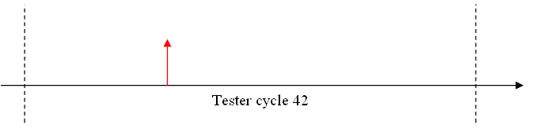
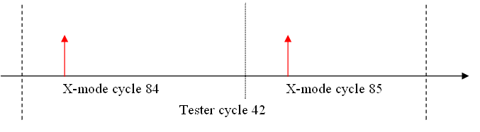

X-mode cycles versus tester cycles
Tester cycle is the test period. X-mode cycles are the cycles as created by ATPG (Automatic Test Pattern Generator) or similar tools. One tester cycle may contain more than one x-mode cycles.
When using x1-mode, there is no difference between x-mode cycles and tester cycles. For example, a failure in tester cycle 42 means a failure in x-mode cycle 42.

When using x-mode, one tester cycle consists multiple X-mode cycles. For example, in x2 mode , one tester cycle consists 2 x-mode cycles.

Calculations using firmware commands
The error map related firmware commands return failures in tester cycle mode. To calculate the failing x-mode cycle, you have to find the failing tester cycle, the failing edge and know from the timing which edge is part of which sub-cycle of the tester period.
Calculations using APIs
When using the APIs ERROR_MAP_TEST and PIN_ERROR_MAP_TEST, this calculation can be done directly to return the failures in an X-mode transparent way.
Performance
The best performance for x-mode- to tester-cycle conversion is achieved when each receive edge is unique for each sub-cycle.
Example 1: If for every waveform, egde r3 occurs only in sub-cycle 2, the conversion from tester cycles to x-mode cycles can be done without much performance impact.
Example 2: If edge r3 for certain waveforms occurs in sub-cycle 1 for others in sub-cycle 2, the conversion is still possible but can only be done with reduced performance.
Functional changes
- Introduced in SmarTest 6.5.0